My Stay est une Progressive Web App (PWA) multi-tenant destinée à digitaliser et améliorer l'expérience client dans les établissements hôteliers.
L'application permet une gestion complète du séjour, une communication fluide entre le client et l'hôtel, et une centralisation des opérations hôtelières dans une interface unifiée. Contrairement à une application mobile native, la PWA est accessible directement depuis le navigateur du client — sans installation — tout en offrant des fonctionnalités natives telles que les notifications push et le mode hors-ligne partiel.
Le système dessert trois profils d'utilisateurs : le client (guest), le personnel (staff), et l'administrateur (admin), chacun disposant d'une interface dédiée et d'un accès aux données strictement contrôlé.
My Stay repose sur une architecture three-tier SaaS cloud-native. Le frontend Next.js est déployé sur Vercel ; la couche données et authentification est entièrement gérée par Supabase (PostgreSQL managé, Auth, Realtime, Storage).
| Couche | Technologie | Version / Note |
|---|---|---|
| Framework | Next.js (App Router) | 15.x |
| Langage | TypeScript | ^5.0 |
| Runtime UI | React | 19.x |
| Base de données | PostgreSQL via Supabase | Supabase Cloud |
| Authentification | Supabase Auth (JWT + SSR) | ^2.104 |
| Temps réel | Supabase Realtime (WebSocket) | postgres_changes |
| Style | Tailwind CSS | ^4.0 |
| Composants UI | shadcn/ui + Radix UI | — |
| State Management | Zustand | ^5.0 |
| Formulaires | react-hook-form + Zod | ^7.x / ^4.x |
| Internationalisation | next-intl | ^4.9 · en/fr/ar |
| PWA | next-pwa + Service Worker | ^5.6 |
| Notifications Push | Web Push (VAPID) | ^3.6 |
| Utilitaires dates | date-fns | ^4.1 |
| Hébergement | Vercel (recommandé) | Edge Functions |
Chaque table métier porte une colonne hotel_id uuid. La sécurité des données inter-tenants est appliquée au niveau base de données via Row Level Security (RLS) PostgreSQL — la couche applicative ne peut jamais accéder aux données d'un autre hôtel, même en cas de bug.
Deux fonctions SQL SECURITY DEFINER STABLE servent de prédicats dans toutes les politiques RLS :
Le client service role (qui bypasse RLS) est utilisé uniquement côté serveur pour la création de comptes utilisateurs dans le module Admin, et n'est jamais exposé au navigateur.
L'authentification repose sur Supabase Auth avec gestion des sessions côté serveur (SSR cookies). Le middleware Next.js intercepte chaque requête pour vérifier la session et appliquer les règles d'accès par rôle.
/login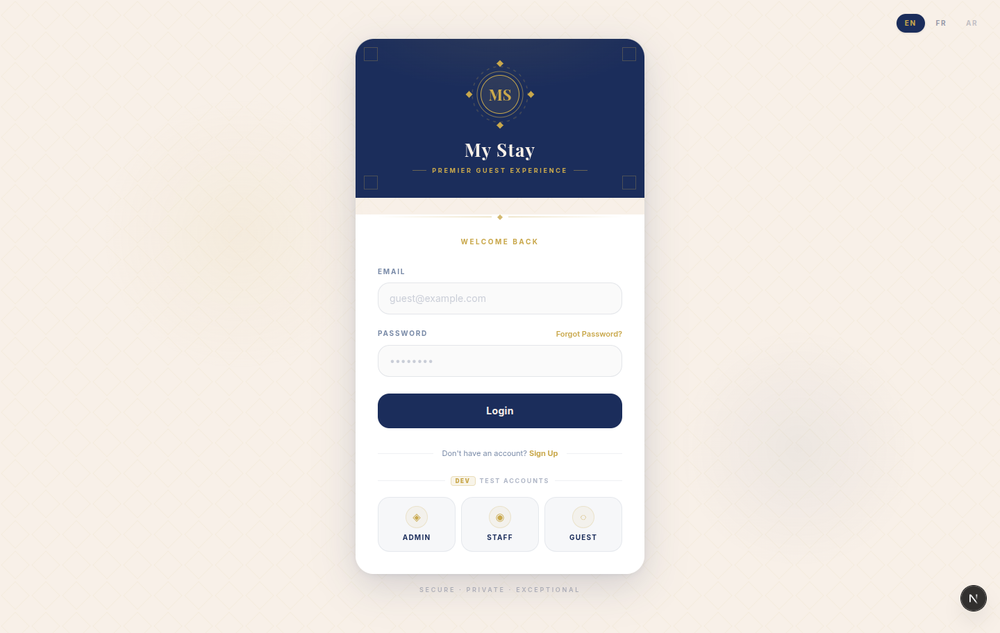
Le système implémente trois rôles distincts, stockés dans la table profiles et vérifiés par les politiques RLS à chaque requête base de données.
| Rôle | Accès | Redirection post-login | Interface |
|---|---|---|---|
| admin | Accès complet à l'hôtel | /admin/operations |
Dashboard + sidebar desktop/mobile |
| staff | Opérations hôtelières | /staff/orders |
Sidebar avec Orders, Requests, Chat |
| client | Portail guest du séjour actif | /dashboard |
Navigation mobile (bottom nav bar) |
Le profil utilisateur contient les champs : full_name, email, phone, language (en/fr/ar), role, hotel_id. Un client s'inscrit via son adresse email et le slug de son hôtel ; son profil est créé automatiquement avec role = 'client'.
Dès la connexion, le client accède à une vue synthétique de son séjour actif : numéro et type de chambre, dates de check-in/check-out, solde courant, et une grille d'actions rapides. Les données sont récupérées via la fonction RPC PostgreSQL get_active_stay(p_guest_id) — jointure optimisée entre les tables stays et rooms.
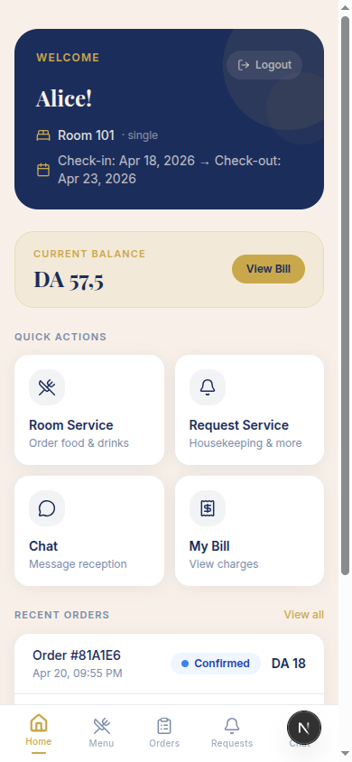
Le tableau de bord expose quatre actions rapides :
Un résumé des commandes récentes est affiché directement sur le dashboard, avec statuts en couleur. La navigation s'effectue via une bottom navigation bar mobile : Home, Menu, Orders, Requests, Chat.
expenses, qui agrège toutes les commandes dont le statut est différent de cancelled.
L'administrateur crée les séjours en associant un guest à une chambre avec des dates de check-in/check-out. Le statut active → archived est géré manuellement via l'action archiveStayAction.
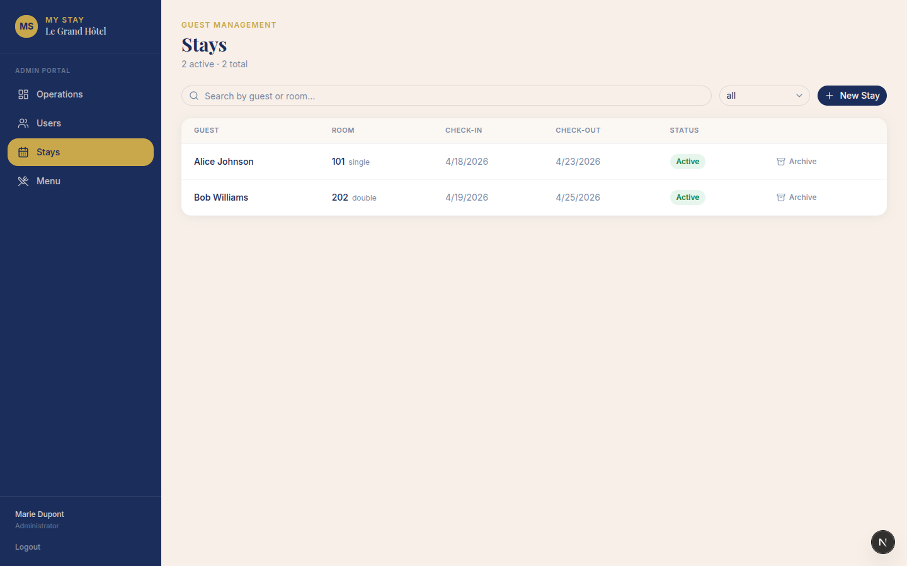
Fonctionnalité planifiée pour une version ultérieure : formulaire numérique de check-in (identité, nationalité, upload de document d'identité), signature électronique intégrée, et validation côté hôtel avant confirmation du séjour.
6Le menu digital est organisé par catégories (Breakfast, Drinks, Snacks). Le client parcourt les articles disponibles (is_available = true), les ajoute au panier géré via un store Zustand, puis valide sa commande avec une note optionnelle. La commande est soumise via la Server Action placeOrderAction.
À chaque transition de statut effectuée par le staff, une notification push est envoyée au client via la fonction utilitaire sendPushToUser(userId, notification).
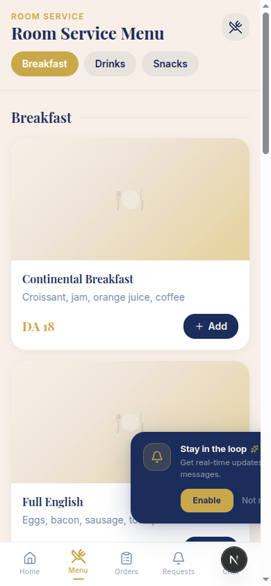
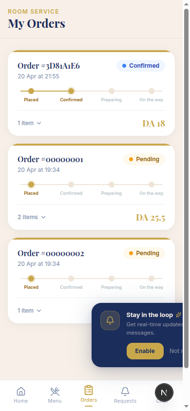
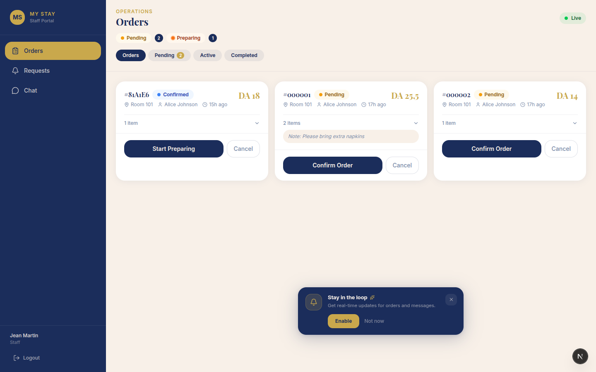
Le module de demandes de services permet au client de soumettre des requêtes de conciergerie directement depuis son mobile. Le staff reçoit et traite ces demandes depuis son tableau de bord dédié.
| Paramètre | Valeurs |
|---|---|
| Types | cleaning · towels · maintenance · other |
| Priorités | normal · urgent |
| Statuts | pending → in_progress → completed → cancelled |
Les demandes marquées comme urgentes déclenchent une notification push à l'ensemble du personnel de l'hôtel via sendPushToHotelStaff(hotelId, notification). Les demandes normales sont notifiées lors du passage au statut in_progress.
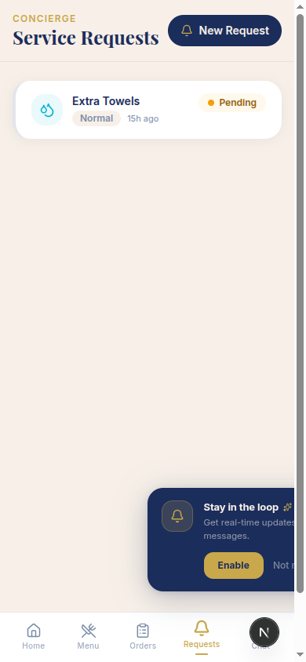
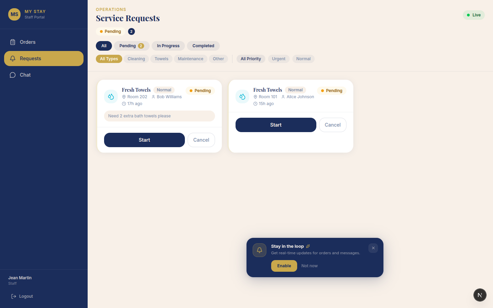
My Stay intègre une messagerie bidirectionnelle client ↔ hôtel basée sur Supabase Realtime (postgres_changes subscriptions via WebSocket). Les messages sont stockés dans la table messages et immutables (UPDATE: never dans les politiques RLS).
L'interface client affiche un fil de conversation unique avec la réception. L'interface staff présente un panneau à deux volets : la liste des conversations guests (avec indicateur de messages non-lus) et le fil actif à droite.
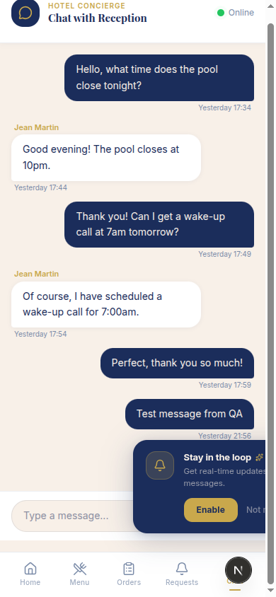
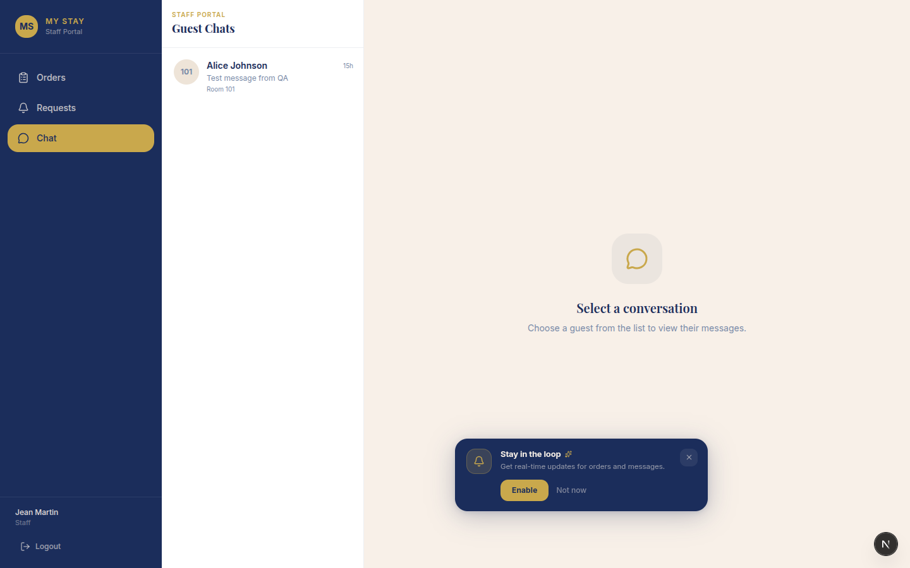
Le système de notifications push repose sur le standard VAPID (Voluntary Application Server Identification) via le package web-push. Un Service Worker (/public/sw.js) gère la réception des notifications en arrière-plan.
push_subscriptions : une subscription JSON par utilisateur (UNIQUE sur user_id)Le suivi des dépenses est entièrement dérivé des commandes Room Service passées durant le séjour, sans saisie manuelle.
Une vue PostgreSQL (expenses) agrège toutes les commandes dont le statut est différent de cancelled, en projetant les colonnes : id, hotel_id, stay_id, guest_id, total_amount AS amount, status, created_at.
Le client consulte son solde courant et le détail de chaque charge (référence, date, montant, statut). Un message en pied de page rappelle que toutes les charges sont reportées sur la note de chambre et réglées au check-out.
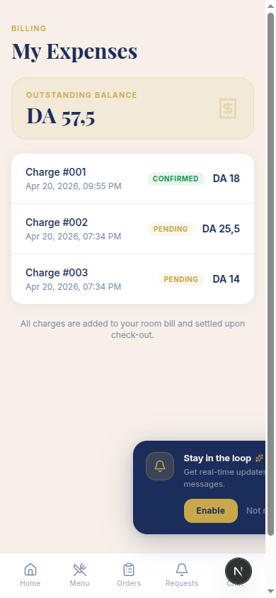
| Colonne | Type | Description |
|---|---|---|
id | uuid | Identifiant de la commande |
hotel_id | uuid | Isolation multi-tenant |
stay_id | uuid | Lien vers le séjour |
amount | numeric(10,2) | Montant total de la commande |
status | text | Statut de la commande (≠ cancelled) |
created_at | timestamptz | Date et heure de la commande |
L'administrateur dispose d'une vue opérationnelle en temps réel de l'activité de son hôtel, construite autour de la fonction RPC get_hotel_stats(p_hotel_id) qui retourne un objet jsonb avec quatre KPIs.
| KPI | Description |
|---|---|
active_stays | Nombre de séjours actifs (clients actuellement en hôtel) |
total_orders_today | Nombre total de commandes Room Service du jour |
pending_orders | Commandes en attente de traitement |
revenue_today | Chiffre d'affaires Room Service du jour (DA) |
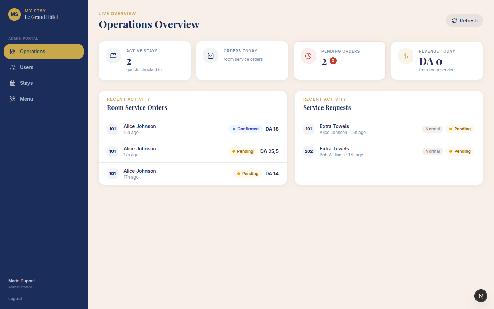
L'administrateur gère le menu Room Service via un CRUD complet : création/modification/suppression de catégories et d'articles. Un toggle de disponibilité permet de désactiver instantanément un article sans le supprimer.
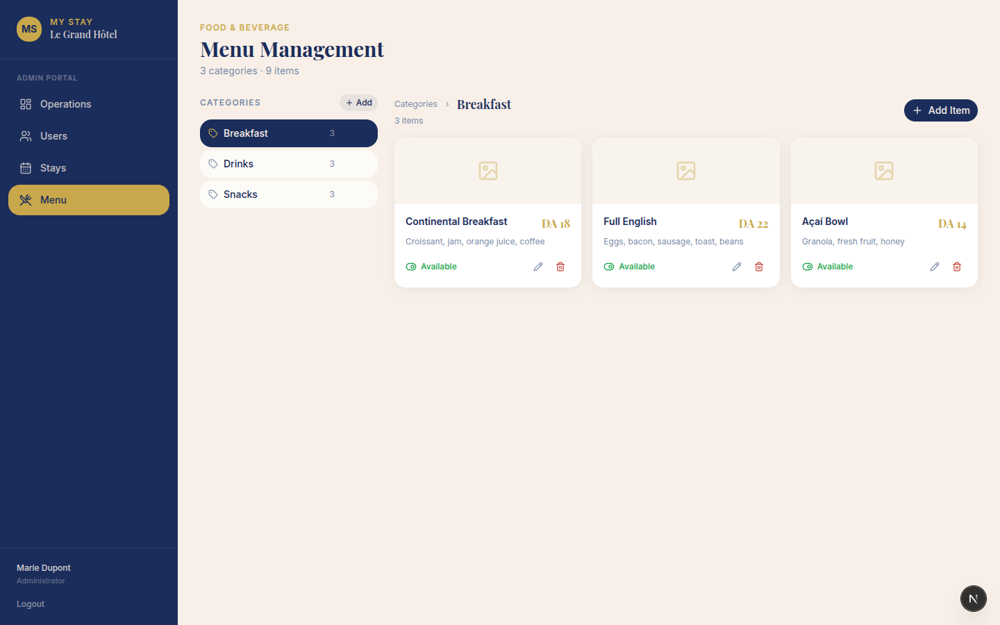
L'administrateur crée les comptes staff et admin via l'API Admin Supabase (client service role, côté serveur uniquement). Il peut modifier les rôles et supprimer des comptes. Les clients créent eux-mêmes leur compte via la page d'inscription publique.
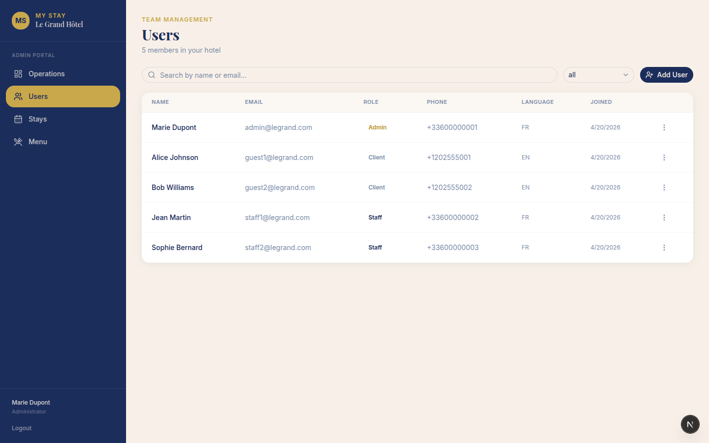
Graphiques historiques des commandes et revenus, indicateurs de satisfaction client, et export CSV/PDF des données opérationnelles. Planifié pour une version ultérieure.
12La sécurité de My Stay est implémentée en couches multiples, de la couche réseau jusqu'aux politiques base de données, garantissant une isolation stricte des données entre tenants.
| Couche | Mécanisme | Détail |
|---|---|---|
| Transport | HTTPS / TLS | Certificat géré par Vercel, force HTTPS sur toutes les routes |
| Authentification | JWT (Supabase Auth) | Tokens stockés en cookies HttpOnly SSR — non accessibles au JavaScript |
| Contrôle d'accès | Middleware Next.js | Vérification session + rôle sur chaque requête avant rendu |
| Isolation données | Row Level Security (RLS) | Politiques PostgreSQL sur toutes les tables — inviolable côté serveur |
| Multi-tenancy | hotel_id + RLS |
Un hôtel ne peut jamais accéder aux données d'un autre |
| Admin API | Service Role Key | Utilisée uniquement dans les Server Actions — jamais exposée au client |
| Validation | Zod + contraintes SQL | Double validation : schémas Zod côté client + CHECK constraints PostgreSQL |
| VAPID | Clés push privées | Clé privée VAPID uniquement côté serveur (.env) |
L'application supporte trois langues dès la première version, avec la locale encodée dans l'URL pour un support SEO optimal et un partage de liens avec langue préservée.
| Langue | Code | Statut | Exemple URL |
|---|---|---|---|
| Français | fr | Complet | /fr/dashboard |
| Anglais | en | Complet (défaut) | /en/dashboard |
| Arabe | ar | Traductions présentes · RTL prévu | /ar/dashboard |
Les fichiers de traduction JSON (/messages/*.json) couvrent les namespaces : nav, auth, guest.*, staff.*, admin.*, common, status. Le sélecteur de langue est accessible depuis la page de connexion.
Les fonctionnalités suivantes sont identifiées et planifiées pour les versions ultérieures de My Stay, classées par priorité de développement.
| Fonctionnalité | Priorité | Description technique |
|---|---|---|
| Check-in en ligne | ● Haute | Formulaire numérique d'identité (upload document), signature électronique, validation hôtel. Extension du schéma stays avec champs checkin_form (jsonb) et signature_url. |
| Facturation PDF | ● Haute | Génération d'une facture PDF récapitulative au moment du check-out. Intégration d'une librairie PDF côté serveur (ex. @react-pdf/renderer). |
| Intégration paiement | ● Haute | Règlement en ligne des charges : Visa/Mastercard, PayPal, Baridimob (Algérie). Extension du schéma avec table payments et statuts de règlement. |
| Feedback client | ● Moyenne | Évaluation 1–5 étoiles + commentaire texte à la fin du séjour. Table reviews avec consultation via le dashboard admin. |
| Programme de fidélité | ● Moyenne | Attribution de points par séjour, historique des points, avantages associés (remises, upgrades). Tables loyalty_points et rewards. |
| Intégration PMS | ● Moyenne | Import automatique des réservations depuis le Property Management System de l'hôtel (Opera, Protel, Fidelio). API REST bidirectionnelle. |
| Chatbot automatique | ● Basse | Réponses automatiques aux questions fréquentes des clients (horaires, services, FAQ). Modèle NLP léger ou intégration LLM via API. |
| Application native | ● Basse | Publication sur App Store / Google Play via React Native (Expo) ou conversion PWA → APK/IPA pour une expérience native enrichie. |
(hotel_id, status), (hotel_id, created_at DESC), (stay_id, created_at ASC), etc.| Métrique | Objectif |
|---|---|
| Temps de réponse API (Server Actions) | < 500ms (p95) |
| First Contentful Paint (FCP) | < 1.5s sur 4G |
| Latence chat (WebSocket) | < 100ms |
| Utilisateurs simultanés | 1 000+ (Supabase Cloud) |
| Disponibilité cible | 99.9% (SLA Vercel + Supabase) |